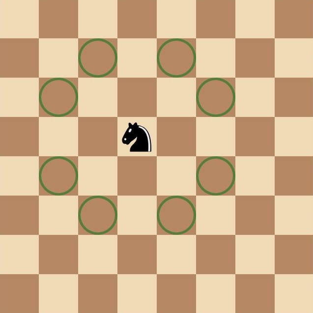
Like a knight moving creatively in an L-shape, I used creative thinking and innovation to address recreational and geographical barriers in my research project for visually impaired students.
Together with my teammate, I conducted a research project on designing an accessible educational and recreational board game for visually impaired children.
Through combining tactile gameplay, Braille, and audio storytelling, the project aimed to transform geography learning into an experience that is not only accessible, but also engaging, interactive, and enjoyable.
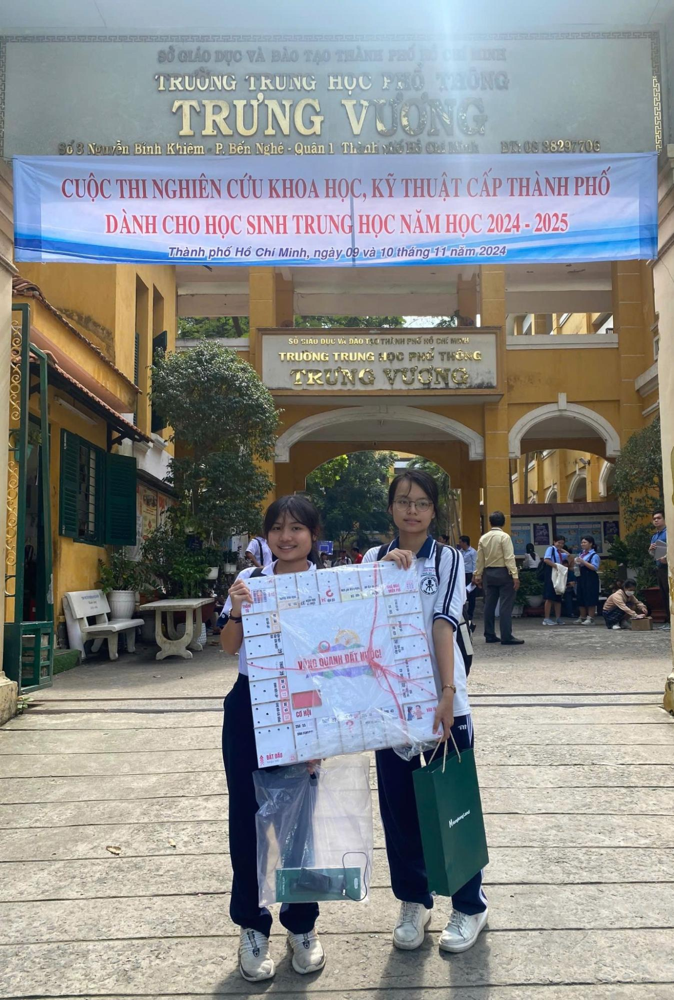
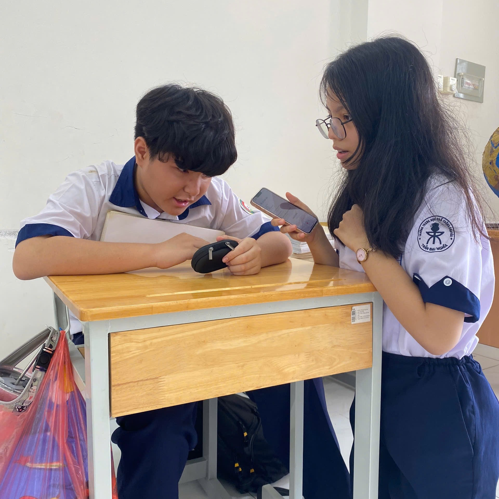
Me interviewing a visually impaired child at Nguyen Dinh Chieu School for the Blind
Before designing any solution, we focused on understanding the real context of visually impaired children. Through research and field interviews at Nguyen Dinh Chieu School for the Blind and Nhat Hong Center for the Visually Impaired, I noticed two key insights:
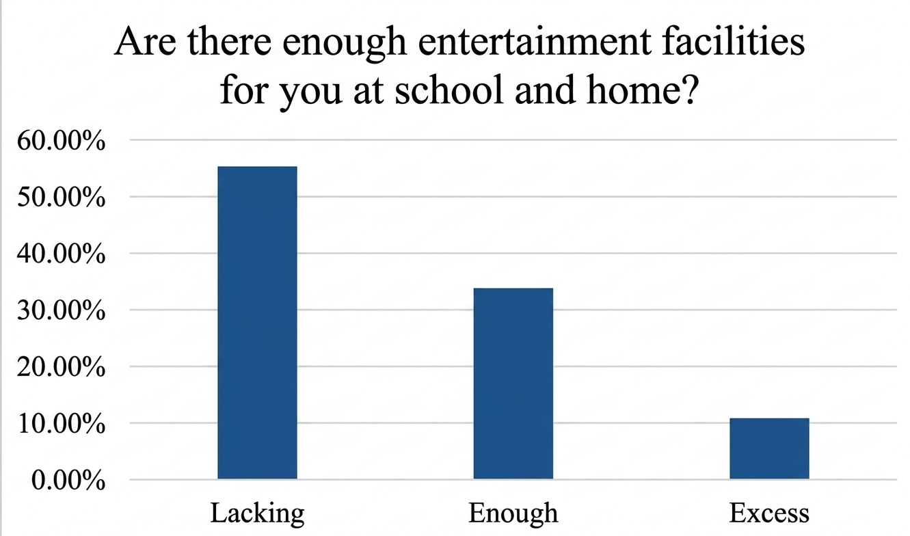
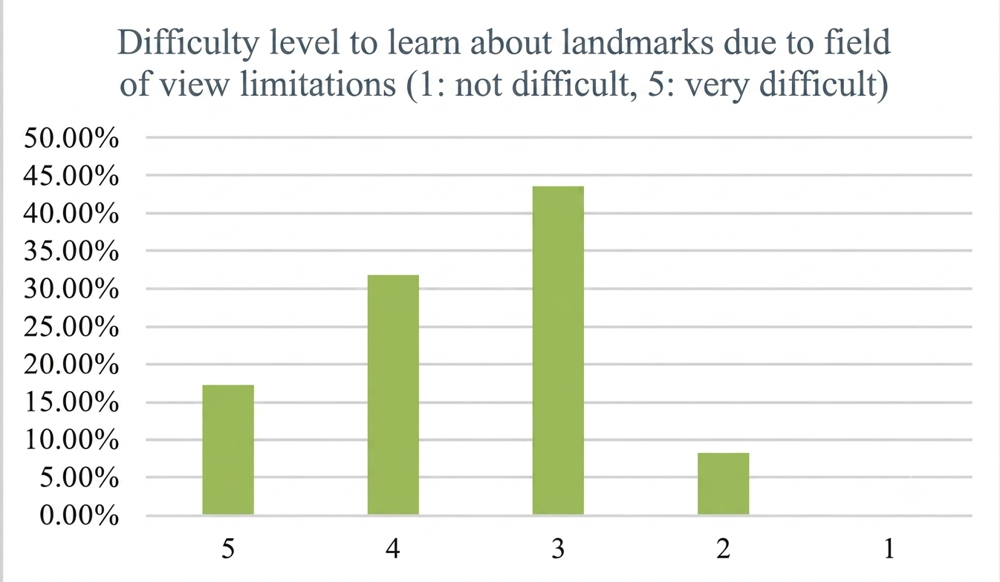
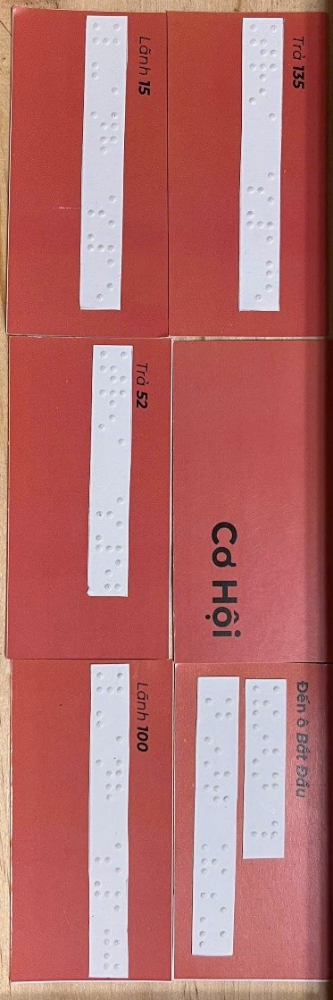
Based on our findings, we designed an accessible geography board game that integrates tactile materials, Braille, and audio storytelling. The goal was to turn knowledge about faraway landmarks and cultures into something students could physically interact with, making learning more accessible and enjoyable.
We developed two Monopoly-inspired board games — Around Vietnam and Around the World — for visually impaired students aged 10–18.
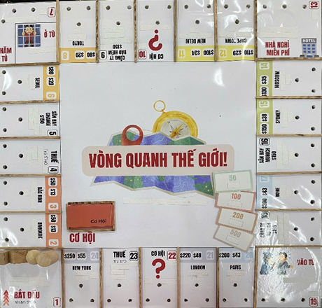
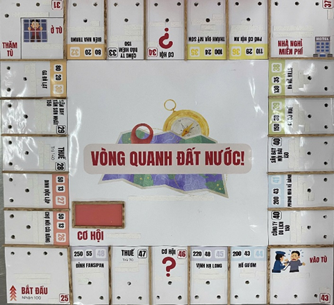
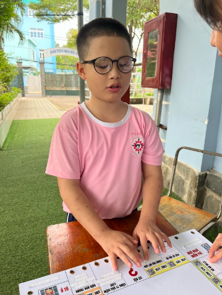
Instead of stopping at the first prototype, we tested the board game with 20 visually impaired students. We collected feedback from both students and teachers to evaluate the game's accessibility, ease of play, learning effectiveness, and entertainment value, then improved the game based on their suggestions and experiences.
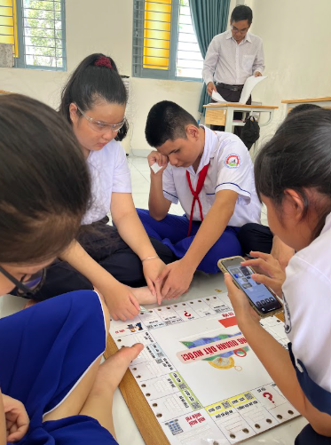
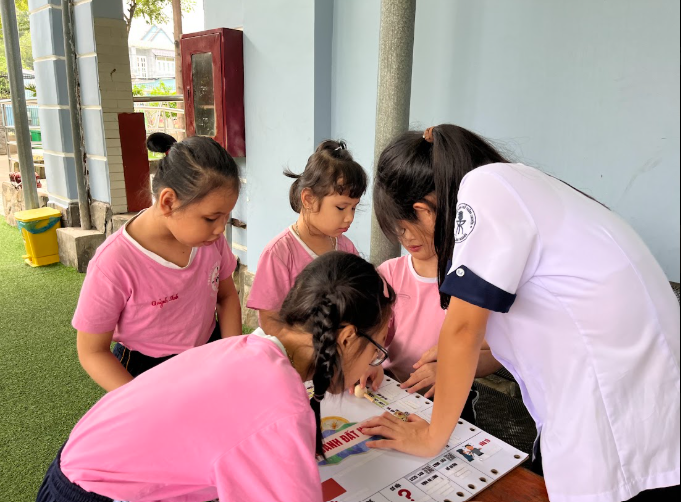
The board game received positive feedback from teachers and visually impaired students. 20 visually impaired children tested the game.
96.4%
Found the game enjoyable
63.1%
Found the game easy or very easy to play
100%
Gained new knowledge after playing
94.7%
Found the audio clear and informative
The project demonstrated how educational games can foster accessible, engaging, and inclusive learning experiences through play for visually impaired learners.
This project taught me that meaningful innovation begins long before designing a solution. It begins with understanding people's everyday experiences, listening to their perspectives, and questioning assumptions. Through researching, testing, and refining the board game with visually impaired students, I realised that the most meaningful ideas are not created for people, but with them.
View Lem Project hereMore importantly, this project changed how I thought about education. I came to believe that learning should be engaging, inclusive, and accessible, regardless of a learner's abilities. That belief later became the foundation of Lem.
Click each piece to discover its story.